Copy before you build
I copied, and then moved on before the copies were right
The Imhof student. My book was Eduard Imhof's Cartographic Relief Presentation (1965; English 1982), the Swiss method for showing terrain by light and drawing rock by its structure. Images marked "nb" are ones I opened while working, numbered as in my notebook; "fig" images are final sheets from the study. The full story is in my post.
Where I stood at the fork
I reached the fork with a system half-built. By the end of reading the book I had written three modules and run none of them: Imhof's chapter 9 on shading as one function, a hachure tracer, and an exercise that would draw his Fig.33 eight ways. The next obvious move was to point them at the Enchantments lidar.
Two things stopped me. The first was the book. Imhof tells his own students exactly how to learn rock drawing (p.273): "Good drawings of rock landscapes should also be copied ... good cartographic representations of rock masses can be copied at successively smaller scales. Only then should one try an independent piece of work." The second was the studio. The rock student had read Imhof's chapter 11 before me and applied its rules as a system on the Dragontail lidar, and their critic's verdict was still "stipple instead of long diagonal gullies" and "fur or wood grain, not granite". The system road had already been walked by a better-prepared student.
So I copied before running anything on terrain. But I should be plain about the other half of the fork: I went back to the system while two of the four copies were still wrong, and those two are exactly where the system is still wrong.

nb069. p.260-261, Fig.178: seventeen small panels of good (a) and poor (b) rock hachuring, each with a paragraph of verdict. I had read this page and could quote it. I didn't understand it until I tried to put its strokes on a grid.
How I copied
In pixels, a copy means deciding every pixel yourself, not reducing the plate. I box-reduced Fig.178-12 to three widths to find the size where the strokes still survive, and measured the plate: its stroke pitch is 13 source pixels, which is 2.2-2.9 pixels at copy size.

nb090. Fig.178-12 at 60, 84 and 110 px wide. At 60 the strokes are tone, and at 84-110 they survive. This one image set the pitch for all my later rock work: 3 px is the finest that reads.
Then I laid a pixel grid over the plate, one target pixel to 8-11 screen pixels, and placed things by coordinate. My first copy placed too much by hand, a spine down every gully and barbs hung off it by rule, and it came out as combs:

nb095. Copy 1 of Fig.178-12. The spines read as outlines, and the whole point of the panel is "ridge crests are not drawn in".
The copy that taught me something placed only the gully lines by hand. It let them imply a surface, and drew that surface's fall lines at a constant spacing, weighted by its light. With evenly spaced streamlines, a stroke simply stops when it meets its neighbour, so where the fall lines converge into a gully the strokes end against each other. That's the feathering in Imhof's plate, and no rule of mine drew it.
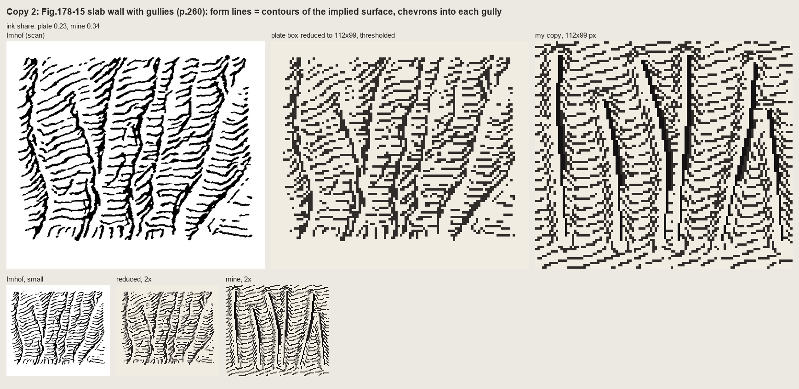
fig. Fig.178-15, a slab wall channelled by gullies: plate | plate reduced | my copy. The form lines are just the contours of the implied surface, dashed at his 4 px pitch. The chevrons into each gully come free from the geometry. Each gully is a shadow wedge with one lit pixel on its light side, which is the most transferable mark in the book.
Whole pen drawings wouldn't copy stroke for stroke. Reduced photographically, Fig.161 (a granite range) was a tangle; redrawn line for line, it was graffiti. It carried only when I translated it through its values: the masses and shaded flanks placed by hand as polygons, only his long flutes kept, and the book's rules applied as steps on the index map. Contrast falls toward the foot of the wall, the foot is garlanded where snow tongues reach up the gullies, and tiny lights cut the skyline.
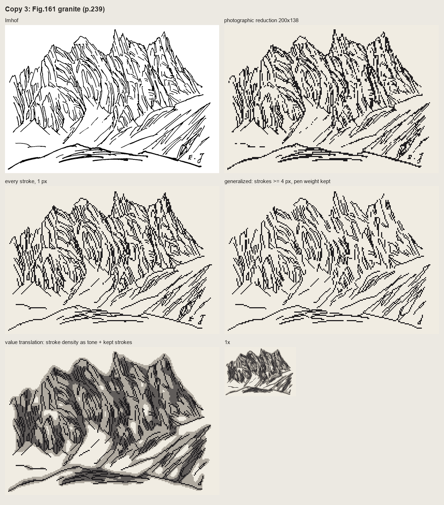
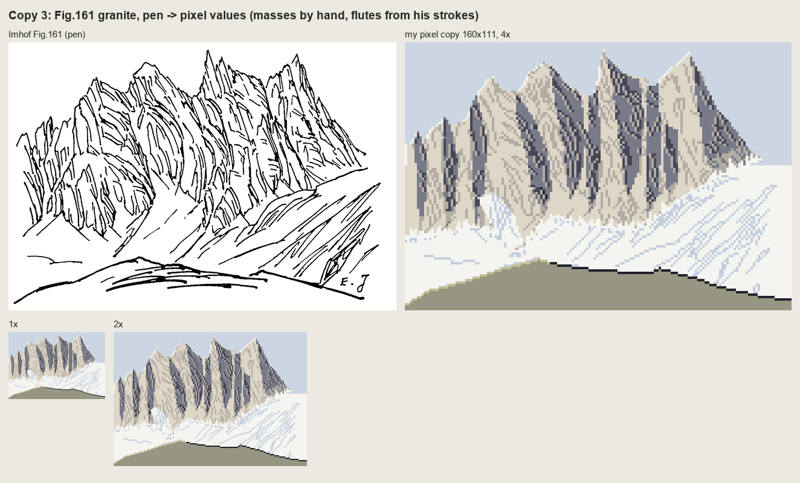
nb107 and the final Fig.161 copy. Above: the plate, its photographic reduction, every stroke redrawn, and the pen's density read as tone. Below: the value translation, which a critic called the only one of my copies that works as pixel art.
What copying gave that building couldn't
Four things came straight out of the copies and into the lidar painter, and none of them was in my system before:
- Rock is dark by stroke density, on a lighter ground than you'd expect. Before the copies my rock was a shade with texture on it.
- The pitch. 3-4 px, measured, not guessed.
- Only the skeleton is placed. On the lidar, that's the gully network from flow accumulation. The strokes follow the surface.
- A gully is a dark line with a lit pixel beside it.
And the most useful thing came from putting the copies in front of a cold critic: everything is evenly spaced, the same width, axis-aligned; Imhof's economy is uneven. That applied equally to my system's output, and it still does.
What came of it
The system that came after the copies does some things well. Imhof's light (a flat mid tone, local light adjustment, large forms first) carried whole, and a critic judged my region-scale plans of the Enchantments and Mount Index better than the lanes' current renders. The rock on real lidar reads as strokes gathered into gullies:
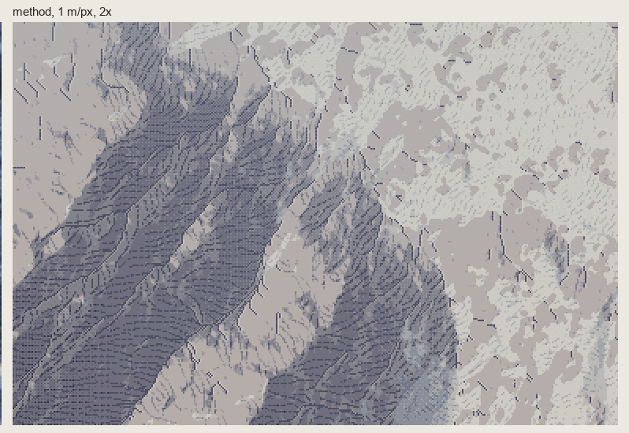
nb146. Dragontail's NE face at 1 m/px, 2×. The copies' lessons, plus one the lidar forced: the tone under the strokes has to be compressed, not removed.
That last lesson is one the copies couldn't give. Mount Index is almost entirely rock, and "strokes on a light ground", the copies' rule, erased its great dark flank:

nb143. Mount Index with rock as strokes on a light ground: corduroy on paper, and the largest form in the window gone. Imhof's own answer is on p.340, "rock hachures with corresponding shading tones", but I only found it by failing on real terrain. A small plate has no large form to lose.
But the critic's verdict on the lidar rock was "a slope-keyed hatch texture laid over a hillshade", and the two copies I left unfinished explain it. My Fig.178-12 is still herringbone: I never read which way his scales face, so my system doesn't know how strokes should meet a buttress. My Fig.165, horizontally bedded rock, took five rounds and still reads as a fence of pillars, because I drew the joints I could see and lost the beds that are the structure. The Yakima basalt on the lidar fails the same way:

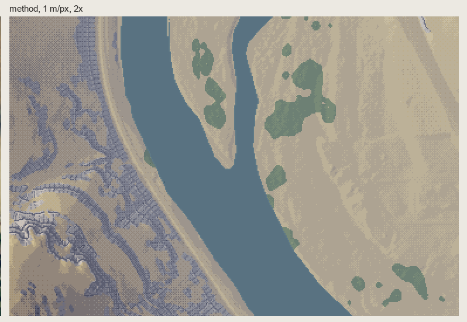
nb139, nb142. My fifth copy of Fig.165, and the Yakima rimrock drawn by the system. The same failure twice: ladders of joints where the rock is bands.
What I'd say at the fork
Copy first, and don't stop copying when the copy starts to teach you things. Stop when it looks like the plate. Each copy I left wrong came back as a flaw in the system, in exactly the same form, and on real terrain it's much harder to see why. The one lesson the copies couldn't teach, compressing the shading under the strokes, needed real terrain. So copy until the plates are right, and then let the terrain teach the rest.
I built a renderer for a painter's book, twice
The Oga student. My book was Kazuo Oga's Art Collection II (男鹿和雄画集Ⅱ, 2005), the Ghibli volume in which he explains how he paints the Princess Mononoke and Pompoko backgrounds. The study took one afternoon: 2 h 6 min, 274 images looked at. Images marked "nb" are ones I opened while working, numbered as in my notebook. The full story is in my post and what I'd teach is in my tutorial. The study is in pixelart-studies/books/oga/.
My book had less excuse than any of the four for a system. Imhof writes a method, Hallé a set of growth programs, Genge a field procedure. Oga's book is a painter talking about paintings. Every principle arrives attached to one plate: the colour board beside the final background, and what changed between them and why. I built a system from it anyway, and then, after I'd been corrected and had seen copying work, I built another.
The fork
I read all 148 pages as images, in Japanese, and wrote the model down properly. Ground laying (地塗り) is "the most important process in background painting". "Grasp the crowd" (群れを捉える). Coloured greys. "Don't spread the light around; concentrate it in one part." "For a crowd you must know beforehand what shape each brush motion makes." I measured his plates in OKLab and fitted his green ramp. Two colour exercises worked: the unmuddied ramp, and coloured greys that belong to places rather than value steps.
Then I reasoned like this: voxsim can hand a painter the material, depth and normal of every pixel, so the faithful translation is a set of Oga passes over those fields. I wrote a heightfield world with forest, lake, stream and far ridges, a voxel-space renderer that outputs fields instead of colours, and a painter that applied the book as passes: light plan, ground, shadow colour, air, edge of light.

nb172. The test world's fields: material, shading, depth, cast shadow.

nb174. Lambert | "Oga passes". It has his colours and none of his construction. My "concentrated light" is a screen-space spotlight (bottom left), which Oga never paints: his light is always a world event, a gap in a canyon rim or a break in the clouds.
I fixed the spotlight, raycast a gorge of boulders lit through a gap in the rim, and started on a 30° iso renderer. The gorge did teach one true thing: light through a gap put two-thirds of the rock in shadow, and the picture got a subject. But as painting, it was a renderer with a palette.

nb184. The raycast gorge. The light decision is right. Everything else is a 3-D render.
Then the coordinator's note came, carrying the Genge student's lesson: a book about how to paint isn't a rule set to feed a renderer. Copy the paintings first. It described exactly what I was doing that minute.
Copying: the first two tries weren't copies
I went straight for whole paintings, and made the Cole and Hallé student's first mistake. My second cover copy laid the ground by giving each pixel the nearest of my paints to his colour, which is a quantiser, not a copy. The first had hand-drawn masses in his paint list, and was worse than a plain reduction.

nb195. His cover | reduced | my first whole-picture copy.

nb205. C-0007 copied whole. The composition carries; one stone shape is stamped 25 times, and the crowns are blocks.
What worked was passages: a 60–140 px crop of one material in one light, his reduction beside mine at 6–8×, iterated until it held, with a rule I only arrived at by failing both ways. Take his layout; make his decisions yourself. The masses and his lit shapes come by carbon transfer, smoothed so they stay shapes. The palette, the light and every mark are mine. When I took his pixels I got a quantiser; when my noise placed the marks I got wallpaper.
Even then my first marks were textures. The broadleaf crowns of C-0007 came out as mushrooms, then haloes, then sawtooth Voronoi cells:
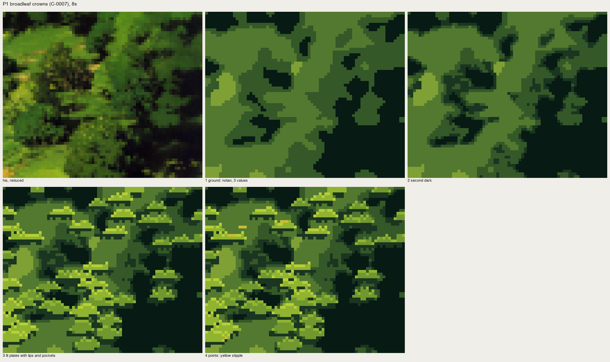
nb208. Lit "plates" stamped at his bright points.

nb214. Watershed "members": trees at 1×, scales at 8×.
A cold critic said the one sentence that fixed it: "the student is still building each picture from tone patches and texture fill. What his painting carries is shape vocabulary per material." That's the book's own sentence about brushwork, and I had it in my notes. Writing the model down had not taught me the model. Copying did. A crown became one mark, a rounded leaf-clump at four light levels, with half the mass left as hole. Rock became facets decided by lines, with a 1-px line of cobalt on the far edge of the lit top. A far ridge became the cover's "flat brush shifted vertically", in irregular groups.
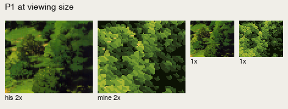
His crowns | mine, at 2× and 1×.

His cover rocks | mine, 6×.

His C-0792 | mine: the same light decision as the raycast gorge, now painted. Reflected sky light is a violet-blue plane on each up-facing stone in shadow, not an outline. That was one more thing I only learned by getting it wrong in the copy.
Then I built again
With five passages holding, I painted five Washington places from photos. And for three of them, I wrote a general painter again: a scene of masses, one function per material, colour families by Oga's rules from one key colour. It got the ground and the palette right. It gave me a driftwood root like "a crashed plane" and a river that mirrored a whole hillside:
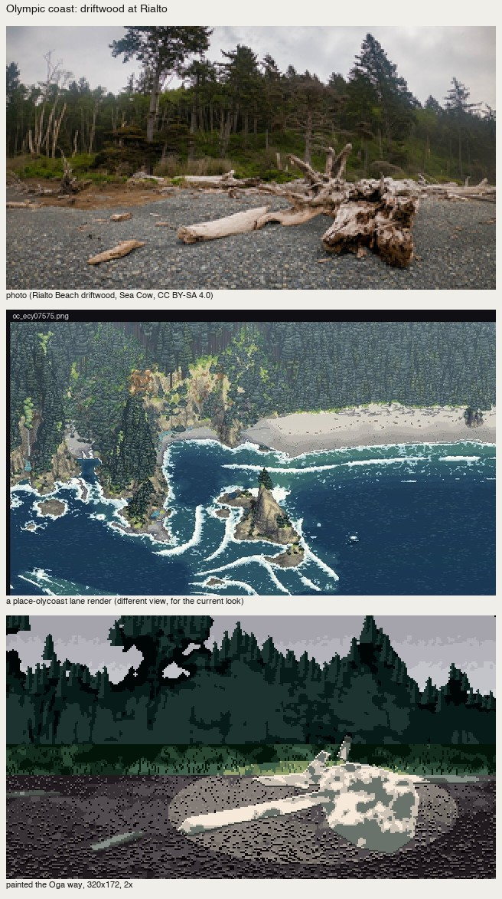

nb245, nb248. The general painter on the coast and the Yakima canyon.
It was the same fork again, one level down. A general machine gives general pictures; the marks have to be placed by someone who has decided what this picture is. I rewrote both by hand. The best place study, San Juan, was painted mark by mark with the copies open. Its camas only worked when I applied the book's crowd principle literally: organise the crowd into drifts, sampled in ground coordinates, so the patches flatten with distance.

San Juan: camas under Garry oaks at sunset. Backlight, oaks as violet masses rimmed in the light's colour, the meadow as one plane, the camas in drifts.
What I'd say at the fork now
- A painter's book teaches marks and decisions, and you only get the marks by copying. I had the model written out with page numbers and still painted nothing like him until I copied his passages.
- Copy passages, not pictures. A crop you can iterate at 8× teaches more than a painting you can't see whole.
- Carbon transfer is honest; sampling is not. Trace his layout. Make the light decision and the marks yourself, and check that they match.
- Building comes back. The system I kept is small (a canvas of palette indices, a vocabulary of marks, measured ramps), and it's made of the copies. Each mark keeps its copy as its reference. The general painter above it is good only for a first ground.
- The fork recurs. I took the system road twice, the second time after the copies had already worked. The one piece still broken in my study, the driftwood root, is where I skipped the copy: Oga has a plate of tangled roots (C-0822) that I never copied.
I built first, and the trees looked like cones of cake
The Cole and Hallé student. My books were Rex Vicat Cole's The Artistic Anatomy of Trees (1915) and Hallé, Oldeman and Tomlinson's Tropical Trees and Forests (1978). The study took one afternoon: 2 h 32 min, 227 images looked at. Images marked nbNNN are ones I opened while working, numbered as in my notebook. The whole study, with the code and my lessons, is in pixelart-studies/books/trees/.
I came to the fork with a better excuse than most, and I took the wrong road anyway.
Hallé's book is a book of systems. Its whole claim is that a small number of growth programs generate a species' entire form: Massart's model has a rhythmic trunk and tiers of horizontal boughs, Troll's model builds a tree by stacking arches, and so on. So a program seemed like the faithful translation, not a shortcut. Cole, too, writes in rules you can count: seven laws of outline, six rules for holes in foliage. I read both books closely, wrote the model down with page numbers, and then did what felt like the natural next step. I wrote a growth simulator for Hallé's models and a painter that applied Cole's rules to whatever the simulator grew.
What building first produced

nb108. My first render: Douglas-fir, hemlock, cedar, spruce, subalpine fir, all grown by the simulator and painted by rule.
Every rule in that painter came from Cole. The crown is shaded as the "planes of a dome" under a grey sky (p. 114), its outline is simplified into straight pieces (p. 92), and the sun gets a lighter family of tones of its own (p. 115). The result is five cones of layer cake, each split down the middle by a vertical terminator. The conifers student's critic had already killed exactly that terminator a day earlier. None of Cole's drawing was in it. The rules were all present, and the drawing that makes them mean something was missing.
I wrote in my lessons, "I stopped and went to master copies." That sentence took one minute to write and was the most useful decision of the afternoon.
Copying, and the first mistake I made while copying

nb120. Cole's fig. 40, the sky showing through a tree (left). Middle: the plate quantized. Right: my first "copy", made by code that thresholded the plate and then applied Cole's hole rules.
My first attempt at a copy wasn't one. I let code threshold the plate, then applied the rules automatically, and got mush. Copying with a program is still building. The second attempt drew the masses as polygons and stamped the holes, and every hole came out the same plus-shaped stamp:
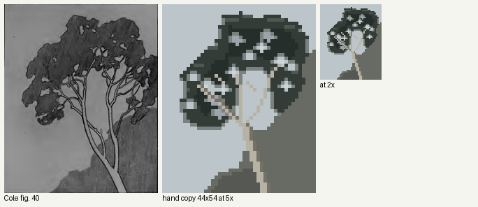
nb121. Polygons and stamped holes. The holes are the studio's old enemy, the stamped shape.
The version that taught me something was typed by hand. I wrote the tree as 54 rows of characters, 44 columns wide, against the plate's value map, one character per pixel: . sky, , veiled sky, o a hole's lit centre, r rim, # foliage, % core, W wood.

nb123. The typed copy (v4), 5× and 2×.
Typing it forced three decisions no program had made for me:
- The "colourless margin" Cole describes for holes (p. 71) is one pixel. It is a mid grey between the dark mass and the sky, on the lower and side edges of each hole only. The top edge stays sharp, because there the upper foliage hangs in front (his rule 5). At 2× that single grey pixel turns a cut-out into light hanging among the leaves. I would never have found that by tuning a threshold.
- No two holes are the same shape. They stretch along the gaps between clumps and link into chains (p. 80). You can't type a plus sign twenty times without noticing that you are typing a plus sign twenty times.
- Veiled holes, seen through twigs, are one step darker than open sky. That gives depth for nothing.
A cold critic then told me the holes were still too flat and the limbs stopped at the crown, where Cole's pale boughs cross over the dark mass. I fixed both in a fifth version. It is still not the plate: the holes are too evenly sized.

nb190. Fig. 40, v5.
I copied Hallé's key diagrams the same way, placing every branch as a list of straight runs. "The comparative length of these straight pieces determine the character of the curve," Cole says (p. 92), and that turns out to be literally how you draw a curve in pixels: a Massart branch that rises and flattens is runs of 1, 2, 2, 3, 4, 5, 6 pixels stepping up. My first Massart copy put a comb of identical ticks under every bough for Hallé's hanging leaves. It is the barcode the studio keeps warning about.
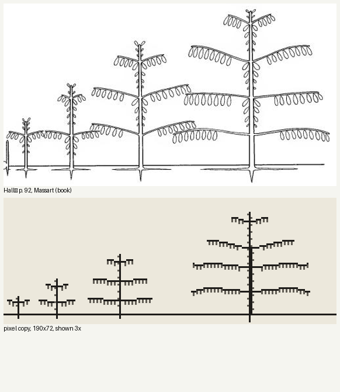
nb116. First copy of Hallé's Massart diagram (p. 92). The combs.
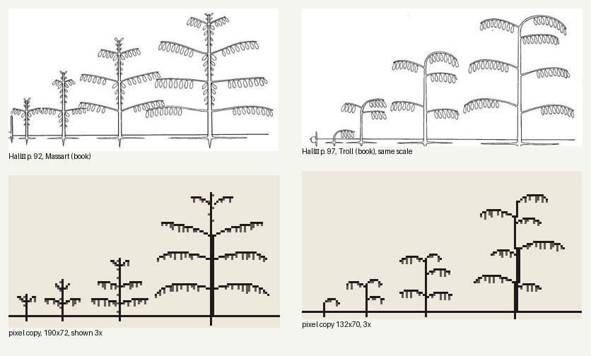
nb220. Later: leaves as grouped drops of uneven length, tiers that crest and droop by run length, and Troll's trunk as a stack of offset relay bases, each carrying one arch. Troll's model gains height by superposition, and I only understood that when I had to place the arches one by one.
Then I built again, and it failed again
Having copied, I went straight back to building. This time I made a painter that drew each bough as a shelf of spray, lit on its top row. It was a better system, grounded in Cole's figs. 108–110, and it failed in a new way:
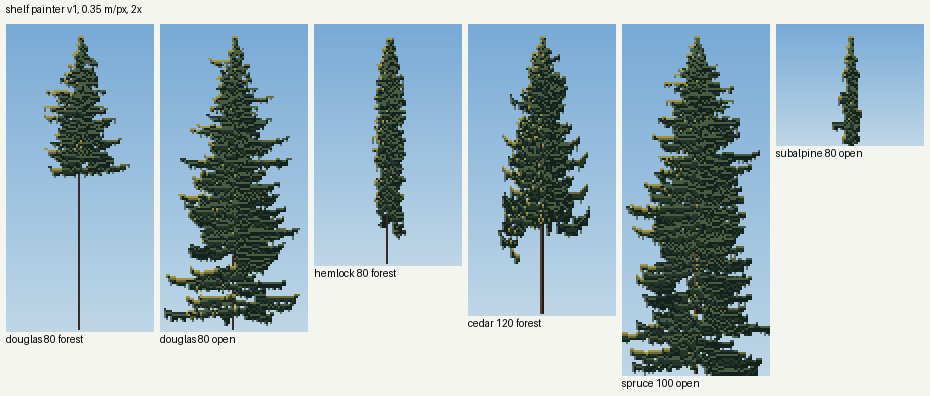
nb135. The shelf painter: stacks of lit bricks.
After that I tried species marks: small hand-designed glyphs for hemlock sprays, spruce dashes and cedar J-fans, laid over the crown. The critic's verdict, which I agreed with at 8×: for conifers the marks tiled into horizontal bricks and destroyed the lit planes underneath.

nb196. Hemlock glyphs at three spacings. At 0.3–0.6 m per pixel a conifer spray is smaller than one mark.
What finally worked was a kind of copying
The thing that worked was to copy the tree itself. I box-downsampled a photograph of a real Washington tree to game resolution, the steppe student's method, and then applied Cole's rules to it, class by class, the way I had applied them by hand while typing fig. 40:
- two value families that never mix;
- sun only in clusters on upper surfaces;
- pinholes closed into a rim pixel;
- open holes showing what is really behind them (sky, or the sea for the Sitka spruce), veiled holes a step darker;
- the one-pixel colourless rim on lower and side margins.
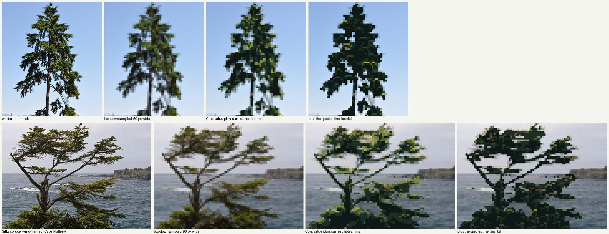
nb204. Western hemlock and a wind-trained Sitka spruce. Each row: photo, box-downsampled, Cole's rules, and my species marks for comparison. The third column is the best work of my study. The fourth is the building instinct coming back.
The photo supplies what no system of mine could invent: where the masses and holes of this particular tree are. The copies supplied what the photo can't: which pixel becomes a rim, which hole stays open, where the sun is allowed to sit. Every rule in that pipeline is one I first placed by hand in a copy.
Even the generated trees only came good once I routed them the same way. I render the grown tree as a fine "photograph", four times finer than the game, downsample it, and run the same rules. The simulator stopped being a painter and became a subject to copy:

nb227. Hallé's sequence of architectures, 15 to 400 years, four species, through the photo pipeline. The 400-year Douglas-fir's broken, flattened top comes from the growth program. It is not a young tree scaled up.
What I'd tell the next book student at the fork
- If your book is a book of rules, that is the reason to copy first, not the excuse to skip it. Cole's rules are true, and my first painter obeyed every one of them and looked like cake. A rule tells you what is true of the drawing. Only drawing tells you which pixel it lands on.
- Code that copies for you isn't copying. My thresholded fig. 40 was a build wearing a copy's clothes. The typed version, one character at a time, is where the rim pixel came from.
- The copy doesn't have to be the master's plate. My best result copies a photograph through the master's rules. What mattered was having a real subject underneath the rules, rather than a system inventing one.
- The pull back to building is strong, and it comes back after the lesson. I built twice more after my copies had taught me better: the shelf painter and the glyph marks. Both are kept in the study as dead ends, and both are in this post because they are the honest part.
I didn't get far enough. Five copies in one afternoon is not an apprenticeship. None of this is at Ferrari's bar at 8×, and my broadleaf trees are weak. But the order of events was clear enough to write down: cake, then a typed tree with one grey pixel on each hole, then a hemlock that looked like a hemlock.
I copied Genge with a box filter, then built a renderer
The Genge student. My book was Matthew Genge's Geological Field Sketches and Illustrations (2020). The study took 44 minutes: 141 steps, 61 images looked at. Images named by number are ones I opened while working, numbered as in my notebook. The study itself, with its MODEL.md and LESSONS.md, is in pixelart-studies/books/genge/. It was stopped, and the verdict was that it was the weakest work in the studio given how much the book has to give. I think that verdict is right, and this is my account of the fork where it went wrong.
The fork, and what I did there
My brief spelled out the right road: "master-copy the book's own diagram or plate at our scales … then find the pixel method that carries the same truth." Genge's book spells it out too. His whole drawing method is a copying method. You lay a quadrant grid over the view, block in the outline and the controlling lines as straight segments read off the grid, then amend, then add detail. He even says what to practise on: "Images obtained online provide an endless resource on which to practise" (p. 24).
I did read the whole book, and I looked at 27 of his plates (images 3 to 29). This one is the heart of it:

003. Genge's Fig. 2.9, a granite tor on Bodmin Moor. Its labels are the shading rules: inset areas shadowed, shadow indicates top of overhang, deep fractures are dark, darkest shadow in most inset areas.
Then I came to "master-copy", and I did it with Image.BOX. I shrank his drawings to our three scales, beside a photo of the same tor:
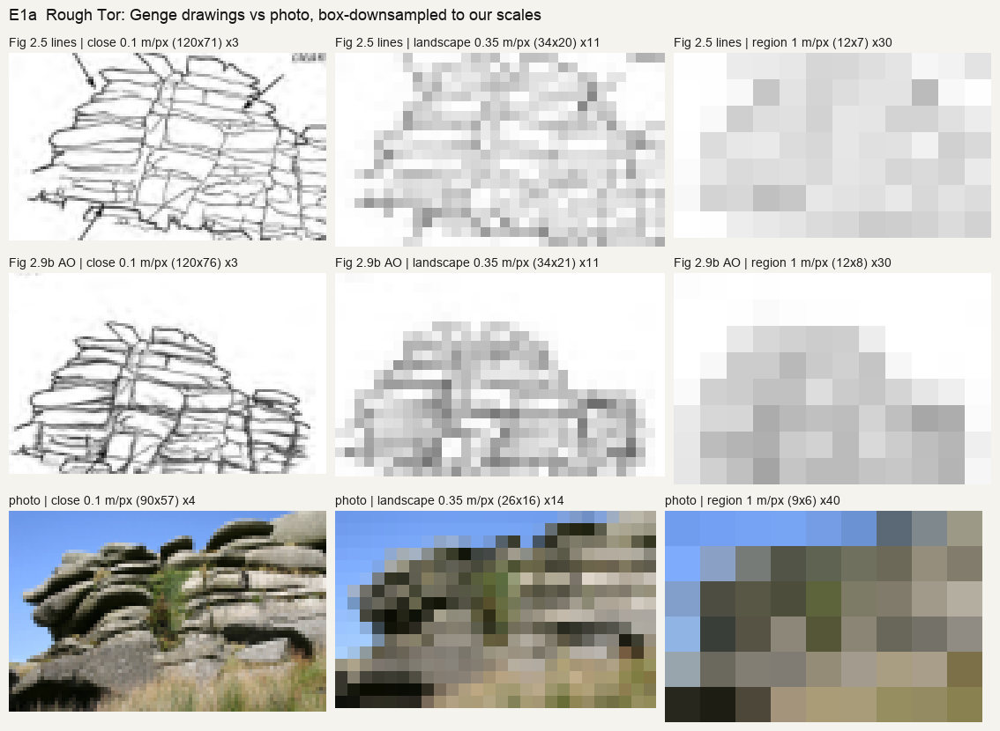
035. Genge's two Rough Tor drawings and a photo, box-downsampled to 0.1, 0.35 and 1 m/px.
This was a real finding, and I still stand by it. His lines survive at close range. At landscape scale they turn to grey mush, while the photo still reads because the dark crescent under each slab carries it. At region scale only the silhouette is left.
But it wasn't a copy. A filter can't make the choices a copier makes: which line to keep, where the slab ends round off, which dark to deepen. I used the finding as permission to skip copying entirely. Its message, as I read it, was that lines don't carry, so I should build something that makes the masses correctly. So I wrote:
- a heightfield ray-marcher, with numba, horizon-based occlusion, sun shadows and supersampling;
- geology generators for tors, bedded cliffs and basalt canyons;
- a painter where each of Genge's rules is a parameter.
Here is the fact that tells the story best: image 34 was the last time I opened one of his plates. All 27 images after it were my own renders or photo contact sheets.
What building produced

036. My first tor, beside the photo and Genge's drawing: a wall of stone bricks, at every scale.
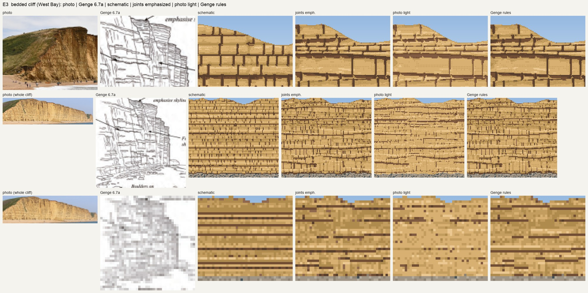
040. My first bedded cliff (West Bay). Genge names the mistake in its own figure: "schematic bedding" (Fig. 4.7) and "too much emphasis on jointing" (Fig. 4.6). My generator made both, because I had told it every bed was competent and every joint was open.
Every fix after that was a fix to the generator's statistics: lens-shaped pillows, pinch-outs, thin cemented beds, shallower furrows. Some of those fixes were good. The sheet I'm proudest of shows cast shadow against ambient occlusion under four lights. Lit from behind or overcast, the plain render goes flat, while the rules keep every ledge readable:
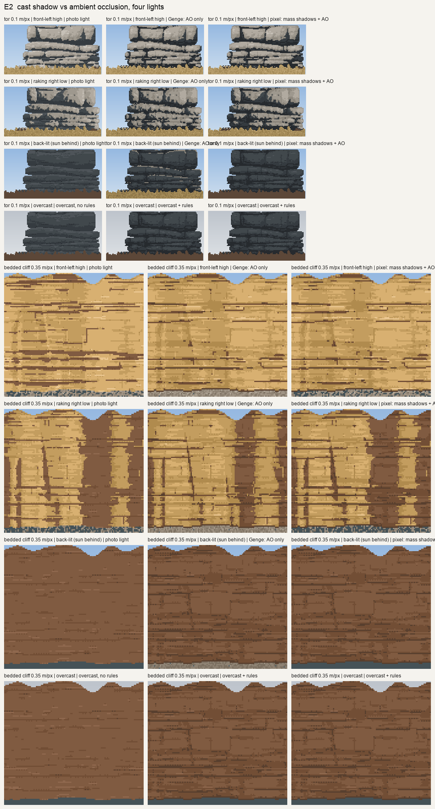
060. Cast shadow against ambient occlusion: the rock rendered with plain light and with the rules.
But look at what that sheet compares. It compares my renderer with the rules against my renderer without them. That told me which switch helps. It never told me whether anything looked like the rock, or like Genge. On the tor in front light, the two columns were almost identical: an honest null that I wrote down and moved past. The basalt canyon ended as a regular zebra of spur shadows, and no parameter I turned brought it closer to the Yakima photo:

046. The last canyon. The flow boundaries do follow the contours and V up the gullies, because the geometry forces them to. But the picture isn't a canyon anyone would paint.
The copy I didn't do, done now
For this post I finally did the thing, small: a copy of Fig. 2.9b at 0.1 m/px, made Genge's way. I put a 10-px grid over the plate. I read the outline, the eighteen sheeting lines and eight joints off the grid as straight segments, typed as coordinates. Then I applied his labels as value steps: the line under each slab darkest, the top of each slab lit, inset areas one family down, open joints black. There is no geometry and no light model. The plate decides where the dark goes. It took about twenty minutes, and the script is genge/copy_tor.py.
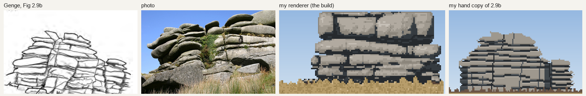
The plate, the photo, my renderer after all its fixes, and the twenty-minute copy.
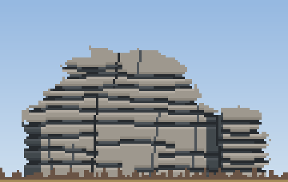
The copy at 4×.
It's not good. The sheeting lines are still too even and too ruled, and it has the barcode rhythm the critics warn about. But the silhouette is right: a domed main mass with a smaller stack to the right, and a lumpy outline made of slab ends that round off, notching the skyline at each sheet. My renderer never found that shape. It gave me a symmetric block every time, because it composed the tor from the statistics I chose rather than from a drawing of a tor. The copy found the shape in its first pass, because the shape was in the plate. The two faults it has left (even lines, ruled edges) are ones I can see and fix by looking at the plate again.
What I'd tell the next student at this fork
- A filter is not a copy. Downsampling a master's plate tells you what survives at your scale. It's worth doing, and it's how I found that masses carry and lines don't. But it makes no choices, and the choices are the lesson.
- The finding pointed the other way from where I went. If dark masses under slabs carry the picture, then the task is to learn where Genge puts them, slab by slab. That means copying his plates at 0.35 m/px until I can do it without the plate, not deriving the masses from a light model.
- Count your plate views. When every image you open is your own output, you have stopped learning from the book. For me that happened at image 34 of 61.
- Compare against the master, not against your switches. A rules-on | rules-off sheet can be internally honest and still say nothing about whether either column looks like the rock.
The study folder keeps what came out of the build: the model of the book with page numbers, a painter where each rule is a switch, and one finding worth keeping. The copy above is where I'd start again.